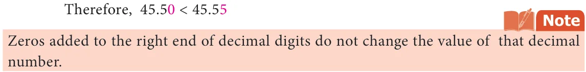
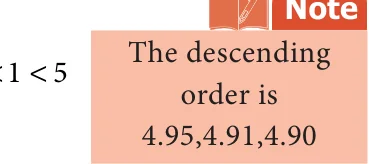

Let us see Bob Beamon's Long Jump record of 1968 summer Olympics which stood for 23 years. His record was 8.90 m. This record was broken by Carl Lewis and Mike Powell in 1991,World championship held at Tokyo, Japan. Carl Lewis jumped 8.91 m and Powell jumped 8.95 m. Can you compare these distances?
We follow these steps to compare decimals.
1.4.1 Decimal Numbers with Equal Decimal Digits
Step:1 Compare the whole number part of the two numbers. The decimal number that has the greater whole number part is greater.
Step:2 If the whole number part is equal, then compare the digits at the tenths place. The decimal number that has the larger tenths digit is greater.
Step:3 If the whole number part and the digits at the tenths place are equal, compare the digits at the hundredths place. The decimal number that has the larger hundredth digit is greater. The same procedure can be extended to any number of decimal digits.
1.4.2 Decimal Numbers with Unequal Decimal Digits
Let us now compare the numbers 45.55 and 45.5. In this case, we first compare the
whole number part. We see that the whole number part for both the numbers are equal. So, we now compare the tenths place. We find that for 45.55 and 45.5, the tenth place is also equal. Now we proceed to compare hundredth place. The hundredth place of 45.5 is 0 and that of 45.55 is 5. Comparing the hundredths place, we get \(0 < 5\).

Example 1.13 Velan bought 8.36 kg of potato and Sekar bought 6.29 kg of potato. Which is heavier?
Solution
Compare 8.36 and 6.29 Comparing the whole number part, we get \(8 > 6\).
Therefore, \(8.36 > 6.29\)
Example 1.14 Two automatic ice cream machines A and B designed to fill cups with 100 ml of ice cream were tested. Two cups of ice creams, one from machine A and one from machine B are weighed and found to be 99.56 ml from machine A and 99.65 ml from machine B. Can you say which machine gives more quantity of ice creams?
Solution
Compare 99.56 and 99.65 Here the whole number parts of the given two numbers are equal. Comparing the digits at tenths place, we get \(5 < 6\).
Therefore, \(99.56 < 99.65\)
Example 1.15 A standard art paper is about 0.05 mm thick and matte coated paper is 0.09 mm thick. Can you say which paper is more thick?
Solution
Compare 0.05 and 0.09 By using the steps given above, the integral parts and tenths places are equal. By
comparing the hundredth place, we get \(5 < 9\). Therefore, \(0.05 < 0.09\).
So far we discussed about the comparison of two decimal numbers. Extending this,
we can arrange the given decimal numbers in ascending or descending order. Example 1.16 Now let us arrange the long jump records of students in a school for 3 years in ascending order
- 1 year -4.90 m (ii) 2 year-4.91 m (iii) 3 year-4.95 m
Solution
The whole number parts of the three decimal numbers are equal. The digits at tenths place are also equal. The digits at hundredths place are 0, 1 and 5. Here \(0 < 1 < 5\). Therefore, the ascending order is 4.90, 4.91, 4.95.

Example 1.17 Megala and Mala bought two watermelons weighing 13.523 kg and 13.52 kg. Which is a heavier one?
Solution
\(13.523 = 10 + 3 + \frac{5}{10} + \frac{2}{100} + \frac{3}{1000}\)
\(13.52 = 10 + 3 + \frac{5}{10} + \frac{2}{100} + \frac{0}{1000}\)

In this case, the two numbers have same digits upto hundredths place. But the thousandth place of 13.523 is 3, which is greater than 0, which is the thousandth place of 13.52.
So, \(13.523 > 13.520\)

- Compare the following decimal numbers and find out the smaller number.
- 2.08, 2.086 (ii) 0.99, 1.9 (iii) 3.53, 3.35
- 5.05, 5.50 (v) 123.5, 12.35